Ben Chang
Personal and Professional Projects
Introduction
Hi! If you're on this website, you've probably found this page from either my resume or my LinkedIn page. This page is my personal site to keep track of the many projects that I do on my free time. Take a look to get a better sense of some of my technical skillset as well as my interests. If you wish to learn more about me, feel free to contact me at benjamin.chang.cmu@gmail.com.
Finance Related Personal Projects
Personal projects related to finance that I am interested in.
Value Investing Feature Analysis
2024 - presentFeb 2025 Update
I ran different parameters using 2 models. Random Forest and XGBoost Classifiers. With models that performed the best (best F1, best precision), etc., I logged by hand the best features across different regimes: GFC, post-GFC, etc.
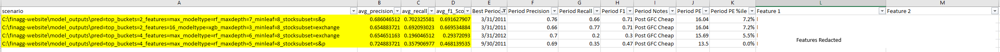
Then, rather unscientifically, I selected what features seem to be perennial features that offer the best signal for future 10 year CAGR performance. Feature selection was guided by 3 ranking methods:1. Feature importances from ML model averaged overtime
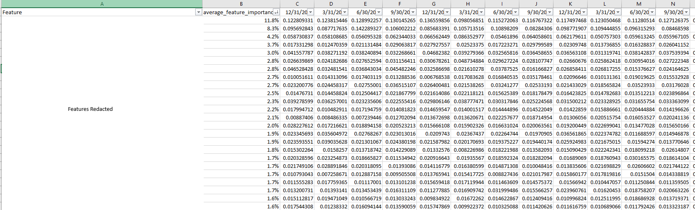
2. Shapley values from ML model
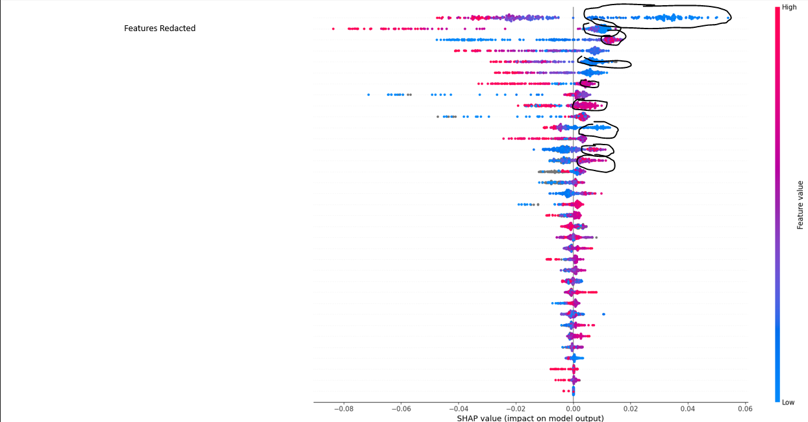
3. Distance per feature of median top quartile performers vs median bottom quartile performers in units if IQR
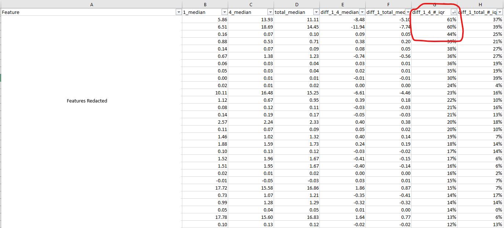
Once features are selected a selection criteria is formed. Features selected fall into 2 categories:
1. A good score for this feature is a MUST. If below a threshold, it is eliminated. Thresholds are unscientifically chosen. We eyeball certain metrics and select them based off prior knowledge of what constitutes a bad score.
2. A good score for this feature is nice to have and increases the rank of the stock, but a bad score does not eliminate it so long as good scores for other features are high enough.
Stocks that above a cutoff are selected in a portfolio. Right now the portfolio is re-balanced each month according to rankings.
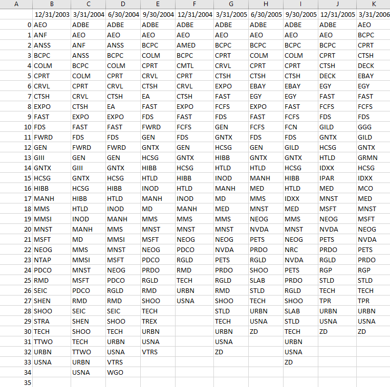
Initial testing on the current Russell 3000 Index of stocks ~2,400 stocks with complete information yields promising results:
Over 20+ years, portfolio CAGR is 22.51% vs SPX TR 10.38%. Sharpe of 1.06 vs SPX TR Sharpe of 0.47.
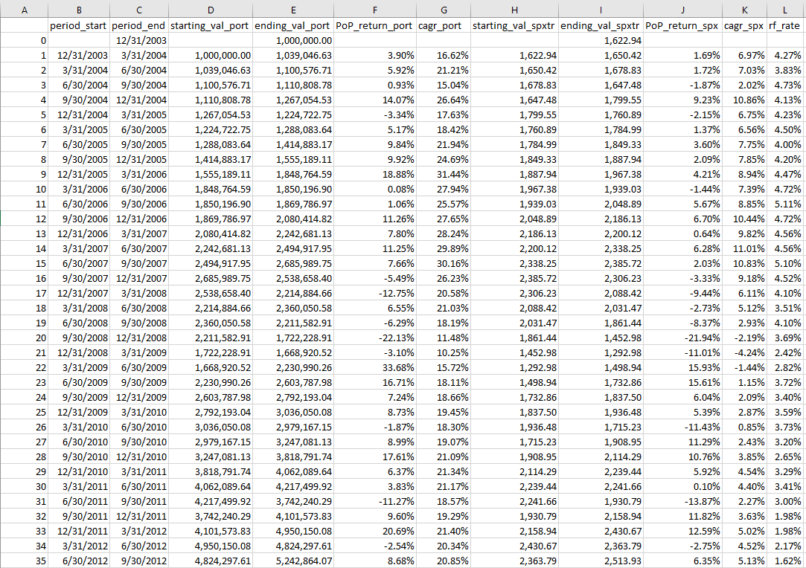
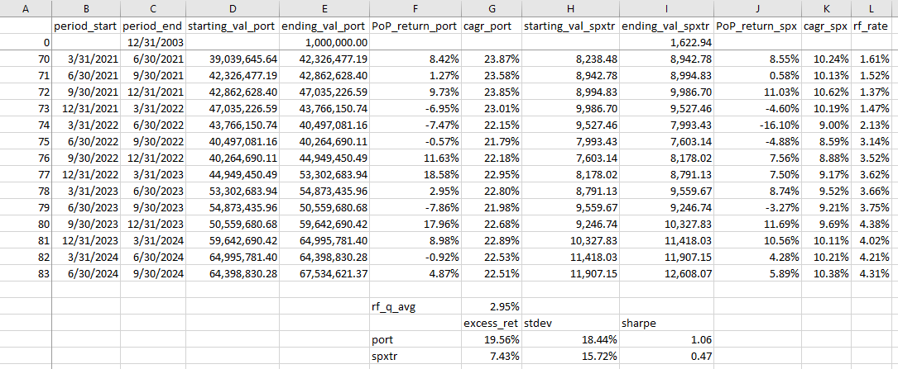
A couple of potential weaknesses that could harm the validity of results:
1. Models are run using 80/20 Test/Train Split for each period throughout the last 20 years. While our final scoring system does not directly rely on model predictions, the features selected are. I do not know whether this means there is contamination doing the back-test this way. I don't think so, but it is something that needs to be explored.
2. The universe for selection is the Russell 3000 as of June 2024. There could be bias in the sense that there are only ~500 stocks in 2003 that are in the Russell 3000 today. We could have some sort of survivorship bias in that the stocks that exist in Russell 3000 today that were around during 2003 were the ones that did well and can affect positively back-testing results. There are a few mitigating factors: First, 500 stocks is still a lot and our scoring system managed to pick up the best performing ones back then. There were still many potential "dogs" that underperformed for 10+ that were avoided successfully. Second, a larger test is currently being done with all stocks that had reporting data post 2003. This universe is ~8,400 stocks. It takes forever to run. That is being addressed and implimented.
TO DO:
1. Re-test portfolio using ~8,400 stocks. This addresses both weakness 1 and 2 because now our training set is only the Russell 3000 stocks and our testing set includes over 6,000 more stocks (although I'm not excluding the Russell stocks, it is a much better place to start).
2. Make the code more efficient such that when new quarterly reports are out, I'm not wasting computational time (and our value features are very much computationally expensive) re-calculating already calculated features. Easier said than done as a lot of features are lookback. This makes it much more feasible to run during an on-going basis.
3. Once 1 and 2 are done (and the test results continue to be promising), I can turn back on the live data feed and begin purchasing stocks live.
Dec 2024 Update
I purchased SHARDAR SF1 Database Core Fundamentals Data (cleaned) from NASDAQ. I used SQLite and sqlalchemy to handle storing and querying of data. After processing, I used Bruce Greenwald and Joel Greenblatt formulae to calculate company performance data in bulk per quarter (a mix of TTM and most recent data). I used the Random Forest Classifier to try to predict if a ticker will be in the top percentile for future 10YR CAGR total returns across different depths and parameters. F1 Scores and precisions were calculated. Then I used SHAP values to measure best features for outperformance.
An example snippet is below: Classification report Class 0 is top 50% performers (I do for a range of percentiles up to top 25%). I use all features (35 in this instance) for random forest classification. This example, we have a maximum depth of 3. Ideally we which to see a higher precision for top performers.
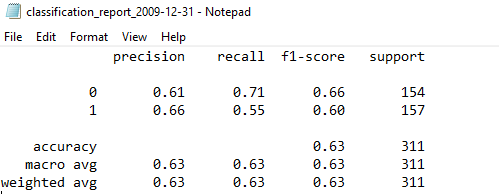
Here are the random forest model's feature importances (we can tune RFE to reduce number of features; in this example we have all of them).
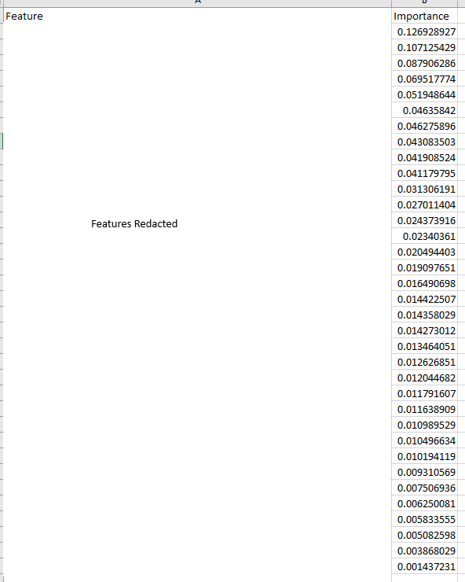
Using SHAP to find direction and significance of each feature.
After running a myriad of scenarios, we can pick parameters that give either the best precision (false negatives are okay in stock selection; we only want to make sure that the stocks we pick are winners and don't care as much about missing some winners. Ie. false positives are the most dangerous.) or best F1 score (best all round prediction results). Highlighted below are the two sets of parameters that gave the best results.
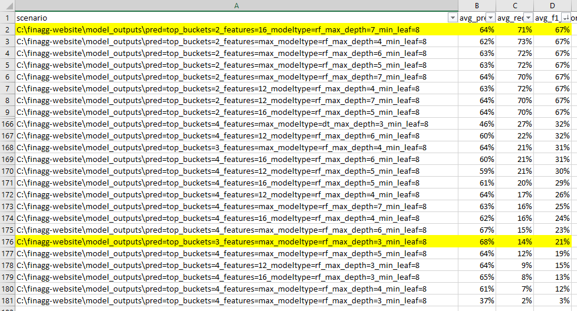
Parameters for highest average precision: aiming for top 33% forward 10 year performers; min points per terminal leaf node is 8; depth of tree for random forest is 3. Focusing on the results with the highest average precision, we can look across time to see what the precision was for different quarters. Precision can get above 0.7 in certain quarters, which means 70% of positives we predict end up being true positives. In a diversified portfolio, we should see outperformance to the market. To do: Backtest with stocks predicted to see performance vs. market. Periods in which we know deep discounts occured (such as 2008 and 2009) should be prioritized. We notice in periods of a sustained bull market, our precision is not as good (2011 onwards). To do: See the most important features and average features of top predicted performers vs. bottom performers and come up with ranking algorithm.

Jul 2024 Update
Completed database construction using free API and data from discountingcashflows.com and calculation of EPV (using Bruce Greenwald's formulae) and first pass at feature selection using decision tree classifier. Using gridsearch to limit tree depth to prevent overfitting. Trying to map quintiles of features to quintiles of stock total return performance in specified time periods. First pass results (Features are still being selected. Some features for current output seem to be nonsensical..)

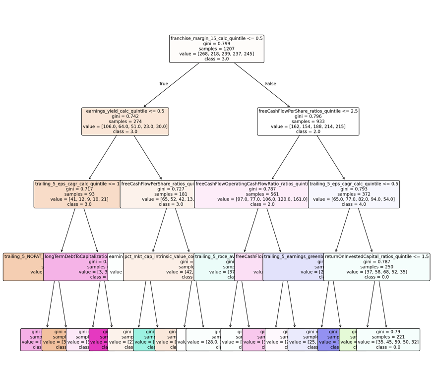
Monte Carlo Options Pricing Exercise
2024 -TBD
TBD
Using HuggingFace and LLMs Locally to Read Tables from PDFs and Documents
2024 -TBD
TBD
Enterprise Solutions Software Projects
Software that I have programmed to tackle certain enterprise problems (outside of my job).
Employee Optimal Shift Scheduler
Aug 2024My fiancée worked as an HR manager at a fast food restaurant. She told me that the manager and team manually created each week's schedule for two teams of roughly 75 employees each, which on average took up more than 12 hours each week. So I wrote a desktop app to do it for them.
It was a very interesting problem as it can be viewed as a mixed-integer constraint optimization problem, meaning that the problem is NP-hard. Took a lot of time to reduce constraints and set up the problem to handle the myriad of constraints (see constraints in the screenshot below). Was able to create optimal (or close to optimal) schedules that minimized costs and maximized employee satisfaction.
The problem was broken into several steps as there were quite a few constraints.
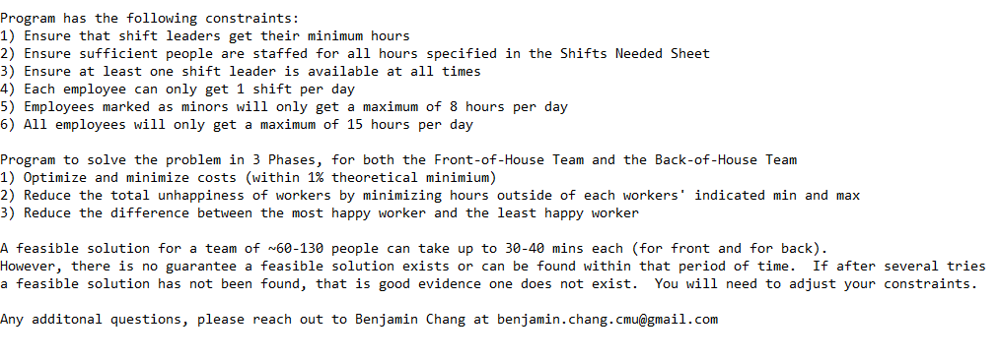
Software was built with a full GUI using customTkinter.
Source code was obfucated and compiled using Cython into an exe for release.
Licensing feature and passcode was handled using Cryptolens.
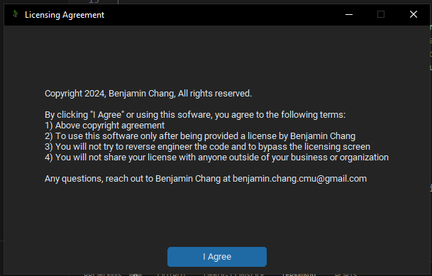
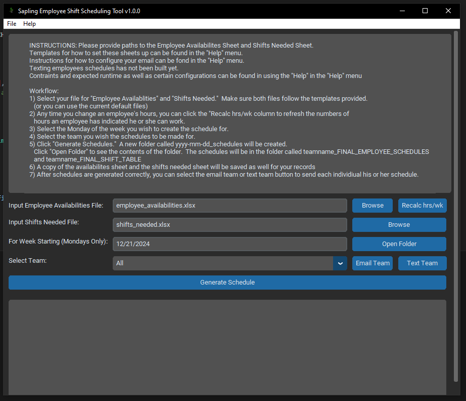
Names and emails are fake here. Summary output generated for the managers to see for each person what his or her shifts were. Sheet was split into 2 pictures for better readability on website.
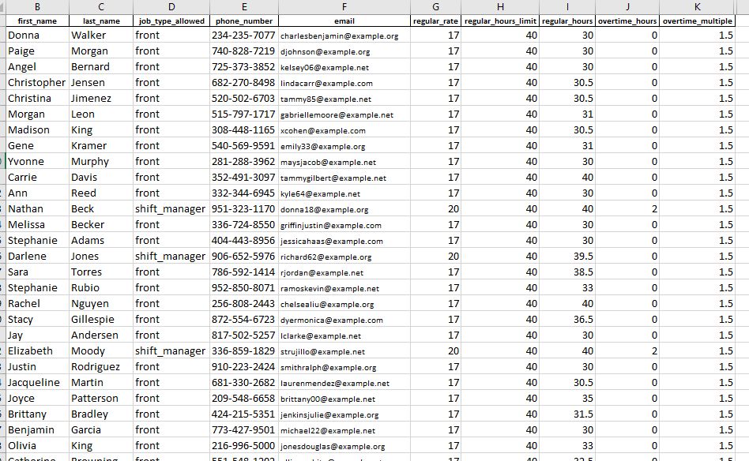
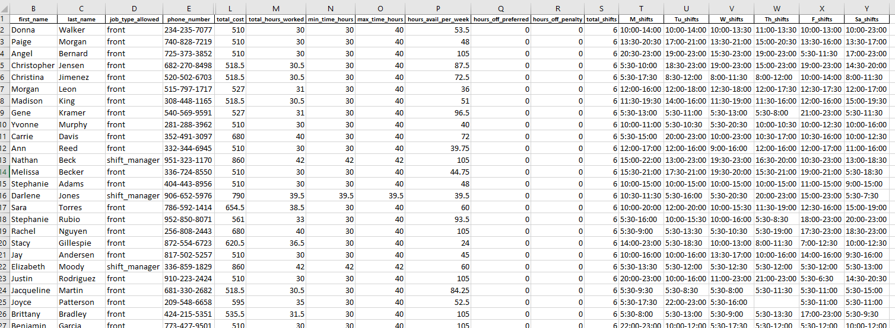
Time series output generated for the managers for each point in time, who is staffed at what role. (All Caps names were shift leaders).
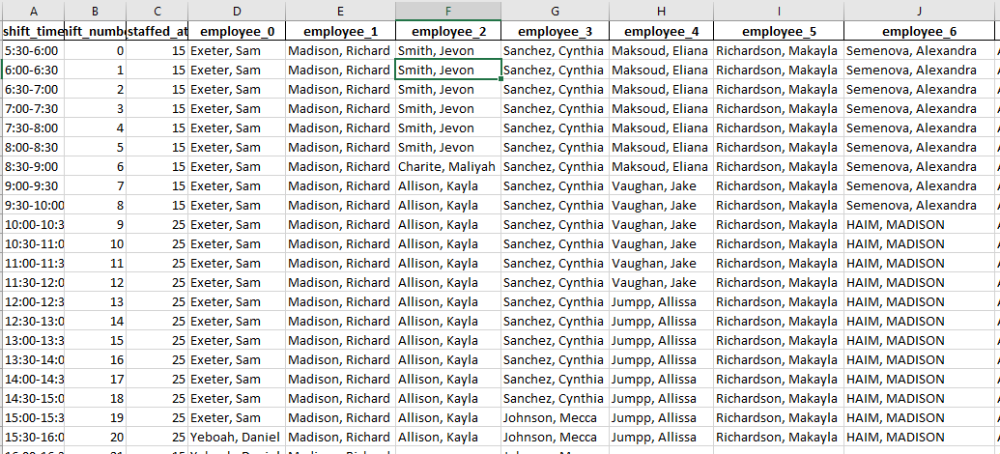
Software automatically generates emails to send to employees after schedule is created. Employee name and business name was redacted from sample email.
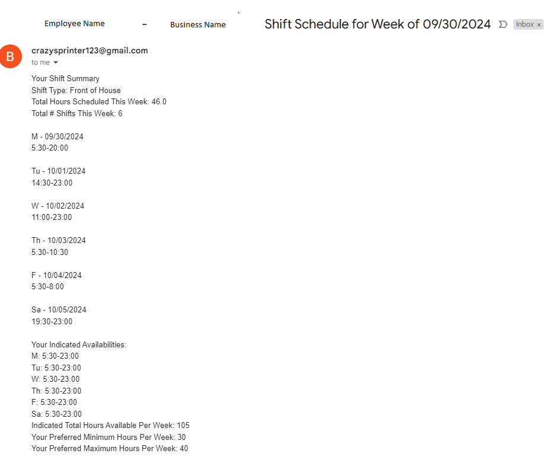
Automatic texting of schedules using Twilio was being researched (but that required a budget to pay for texting via internet services and was put on hold).
Machine Learning Personal Projects
Personal projects related to machine that I am interested in or projects I have implemented in class.
Before that, however, here's my obligatory comment on machine learning and AI:
Everyone these days likes to talk about AI but before I try to tackle a problem with a 1.8 trillion parameter large-language model, have I considered...
- Using a decision tree to help automate security selection to add to the portfolio?
- Building a scraper to collect OTC trading data and using a linear regression (or if needed, gradient boosting) to find relationships between two datasets before trying more complicated non-linear relationships?
- Using fuzzy matching to tackle record linkage (ie. mapping different spellings and acronyms of company names to the same label)?
Considering that once we know what the returns and risk profile of an individual security is, we technically can list all of the securities we bought and learn features that we actually care about. Perhaps this will make explicit the features we care about and add explainability and consistency to our investment decisions.
Machine learning requires data--preferably a lot of it. While there is a tremendous amount of data available, a lot is not easily accessible in structured finance. However, some trading data is publicly sent out by the dealers and if you collect that systematically, you'll soon find you actually have quite a bit of data! My ML teacher once said something to effect of, “Linear regression is awesome. Linear regression solves a lot of problems. If the data is not linear, try to transform it to be linear. Use Linear Regression before you try something more complicated. Don't kill mosquitos with cannons.”
Eg. AAL, American Air Lines, American Airlines, American Airline, American Airlines Group Inc., American Airlines Group Incorporated...okay, this problem might actually require use of LLMs or word embeddings. Perhaps a future HuggingFace project?
Image Classification Using Support Vector Machines
Apr 2024Using SVM to classify images with ~30% accuracy.
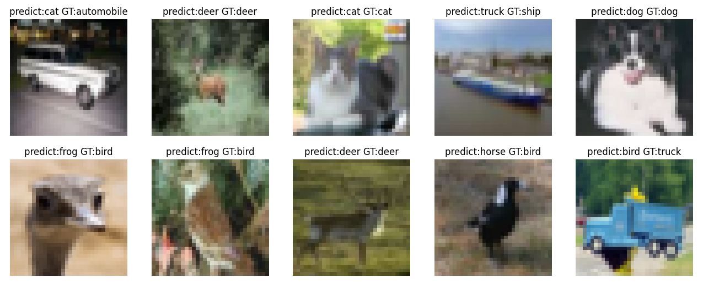
Bottle Liquid Level Classification Using Convolutional Neural Network Architecture
May 2024Using a simple CNN architecture to detect how much fluid is in a bottle (scale of 0-4, 0 being empty, 4 being full) for ~80% accuracy after 10 epochs.
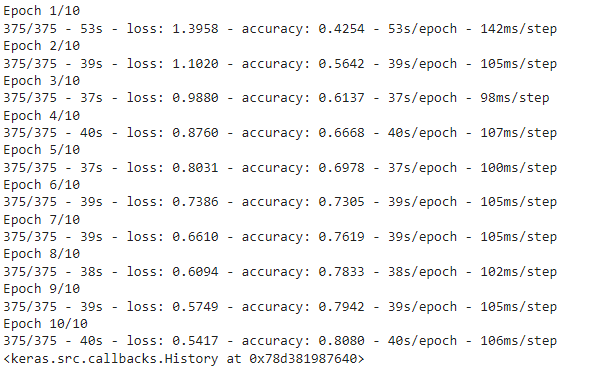
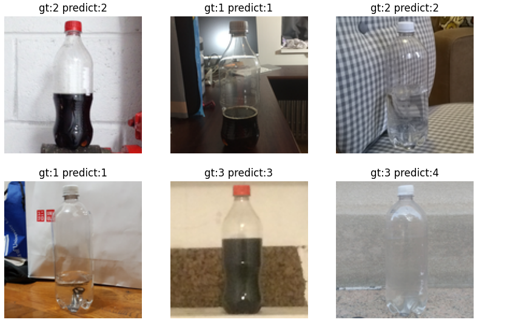
Conditional Generative Adversarial Network Bottle Image Generation
Jun 2024Using a simple cGAN architecture to generate images of partially filled bottles (using labels 0-4 to indicate how much liquid in bottle) after 100 epochs.

CV Summary
Paloma Partners/Cannae Portfolio Advisers
2019 - PresentSecuritized Products Trading
Deutsche Bank Securities
2017 - 2019Global Markets - Asset-Backed Securities Trading
Education
Columbia University - Fu Foundation School of Engineering and Applied Science
2023 - 2025Online Artificial Intelligence and Machine Learning Executive Certificate Program
Carnegie Mellon University - Tepper School of Business & School of Computer Science
2013 - 2017Bachelor of Science in Business Administration: Track in Finance, Double Major in Computer Science with University Honors
GPA 3.93/4.0
Academic Awards and Honors - Some stuff I've achieved throughout the years that I am proud of.
Poets and Quants: Best and Brightest Business Majors - Class of 2017 (click to see profile)
Andrew Carnegie Society Scholar - Class of 2017
Beta Gamma Sigma Honor Society
Carnegie Mellon Senior Leadership Award
Dean's List All Semesters
Skills
Finance
- Securitized Products Trading
- Financial/Credit/Cashflows Modelling
- Risk Management
- IntexCalc
- Intex API
- Bloomberg Terminal
- Bloomberg API
- Unstructured Data Scraping and Processing
Technology & Programming
- Python
- HTML
- CSS
- Javascript
- Algorithm Design
- SQL
- Database Design
- VBA
- Git
- Project Management & Continuous Deployment
Machine Learning Coursework
- Linear and Logistic Regression
- Gradient Boosting
- Support Vector Machines (SVM)
- Decision Trees
- Random Forest
- Convolutional Neural Networks (CNN)
- Generative Adversarial Networks (GAN)
- NLP
- LLMs
- Transformers
Passion Projects
A collection of stuff that I like to do for fun. Mainly writing and creating video games.
My First Published Book
2020 - 2022Computing Morality: A Computer Scientist's Approach to Ethics and Economics
I like proofs I learned in my computer science and math classes, and I like economics and free markets. In this book, I attempt to build a consistent ethical system using axioms to defend the liberties and freedoms that many of us today take for granted.
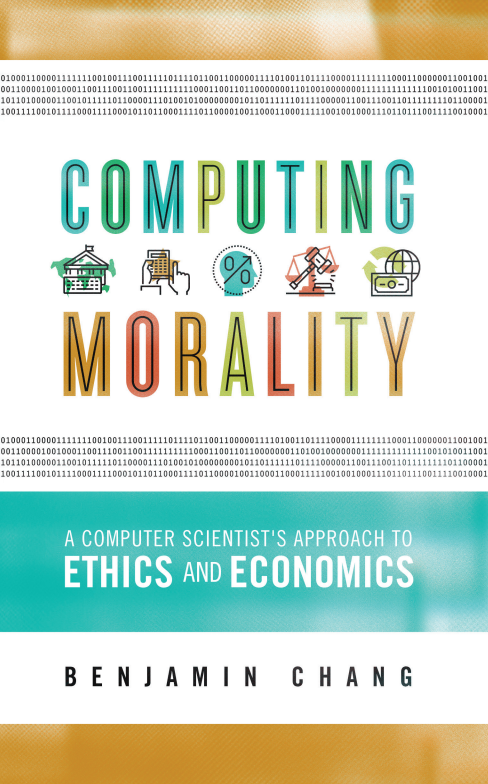
My Second Book
TBD: Self publishing a collection of fariy tales I've written throughout the years.
TBD
My First Video Game
Into the Darkness
A puzzle game developed during my freshman year of college for the 15-112 Term Project. You mysteriously wake up in a pitch black room and the only source of light is a talking, floating lantern. Together you must figure out a way out of the darkness--a place filled with hazards and secrets!
Click here to download a zip file of my game. Just unzip and click on the exe to enjoy!
A Personal Note
I enjoy tennis, economics, writing, singing, playing the guitar, swing dancing, programming, and playing video games.
Listen to me sing Suspicious Minds during a rehearsal. Guitar and lead vocals: me. Bass and supporting vocals: Catherine LeClair.